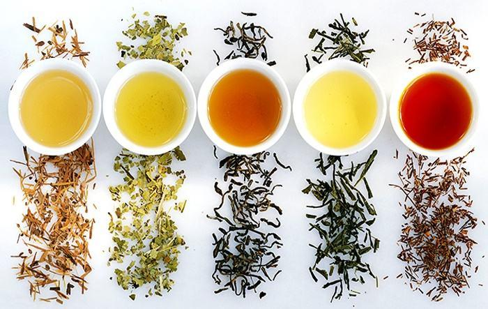

如何泡各种茶 - How to make various types of tea

总述
茶的种类，依据发酵程度以及茶汤颜色排序：
- 绿茶
- 白茶
- 黄茶
- 乌龙茶/青茶
- 红茶
- 黑茶
此外还有
- 花茶
- 调味茶
以及其他名叫“茶”，但不由茶叶冲泡的饮料。
所需器皿：
常规泡法：
烧水壶，最好能显示水温
茶壶，最好有滤网
茶杯
分茶器（非必需）
盖碗泡法：
烧水壶，最好能显示水温
盖碗
煮茶：
烧水壶，最好不是铁做的
茶杯&分茶器 或 盖碗
冷泡：
任意容器一个
泡茶步骤：
常规泡法：
抓5-10g左右茶叶放到茶壶里
向茶壶倒入一定温度的热水
等待一定时间
（如果有很多人）把茶倒进分茶器里
向每一个茶杯倒茶，注意不要把茶壶/分茶器倒空
重复第2-5步，每重复一次就是一泡。
盖碗泡法：
抓3g左右茶叶放到盖碗里
倒入一定温度的热水
等待一定时间，通常为三五分钟
煮茶：
用壶烧水至70°C
抓3g左右茶叶放到壶里
水开后再煮5分钟，将茶倒出，之后倒入分茶器或盖碗
冷泡：
抓3g左右茶叶放到容器里
倒入凉水
等待一定时间，通常为几个小时
一些注意事项：
最好用矿泉水泡茶。矿物质可以把茶中的鞣酸沉淀下来，喝起来会少些涩味，尤其是绿茶。
冲泡温度很重要，低了不香，高了太涩。通常来说，发酵越充分，建议使用的水温越高。具体各种茶的最适温度见下文。
冲泡时间不固定，与茶的种类、用量、个人口味有关，第一泡通常15秒-60秒，之后每一泡都比上一泡长15秒。建议自己多试试。通常来说，如果茶汤颜色太浓或太淡了，就意味着冲泡时间太长或太短了。冷泡茶可能需要4-12小时，温度越低，所需时间越久。
只有绿茶，新白茶，和乌龙茶比较适合冷泡。冷泡茶的涩味会减少很多。
陈茶（比如陈年的普洱和白茶）泡的道数可以多一些，并且只有陈茶才可以煮。
如果是内装碎茶或茶粉的茶包，建议加大用水量，且只泡1-2泡。
茶砖在冲泡之前，需要用起子或螺丝刀撬成碎片。
因为茶里有咖啡因，不建议空腹或睡前喝茶。
绿茶
非常常见的茶，有“豆香味”，回甘明显，可能会有苦味或涩味，通常能泡2-3泡。可冷泡。
常见的绿茶有西湖龙井，黄山毛峰，碧螺春。
冲泡温度：85°C（常规泡法）/ 20°C（冷泡），但其实这之间的任何温度都可以。
茶汤颜色：黄绿色。如一点绿色都没有说明水温太高了。
注：抹茶也属于绿茶，但其形状，味道，冲泡方法与普通绿茶大不相同。
白茶
一般常见的茶，新茶通常能泡2-3泡，陈茶能泡更多。茶砖可存放很久，越陈越香。新茶可冷泡，陈茶可煮。
常见的白茶有白毫银针。
冲泡温度：85°C-90°C（常规泡法）/ 20°C（冷泡），但其实这之间的任何温度都可以。
茶汤颜色：淡黄色。
黄茶
不太常见的茶，泡法介于绿茶与乌龙之间。
乌龙茶
非常常见的茶，闻着特别香，回甘明显，通常能泡3-5泡。强烈推荐给刚开始喝茶的新人。可冷泡。通常可加奶。
常见的乌龙茶有安溪铁观音，武夷岩茶（大红袍），高山乌龙（我最喜欢的茶之一）。
冲泡温度：85°C（常规泡法）/ 20°C（冷泡），但其实这之间的任何温度都可以。
茶汤颜色：橙黄色，大红袍为红色。
红茶
非常常见的茶，喝起来很香，口感很醇厚，通常能泡3-5泡。通常可加奶。
常见的红茶有祁门红茶，正山小种，金骏眉，滇红（我最喜欢的茶之一）。红茶在国外也很受欢迎，常见的有：波斯红茶，阿萨姆红茶，锡兰红茶，肯尼亚红茶，英式早餐茶（阿萨姆，锡兰，肯尼亚的混合）。
冲泡温度：95°C-100°C
茶汤颜色：橙红色-深红色。
注：红茶茶包里是红茶粉，通常只能1-2泡，泡出来的茶汤颜色特别浓。
黑茶
一般常见的茶，通常能泡大于5泡。茶砖可存放很久，越陈越香。陈茶可煮。
常见的黑茶有普洱茶，泾阳茯茶，黑砖茶。普洱茶分为生普和熟普，新熟普闻起来可能有难闻的发酵味（学名叫渥堆味）。
冲泡温度：95°C-100°C
茶汤颜色：橙黄色（新生普），深红色（陈生普与熟普）
注：可以在煮大米粥时添加熟普，很好喝。
花茶（特指窨制花茶）
让茶叶吸收鲜花的香气而形成的茶。喝起来前两泡有花香味，之后逐渐过度到正常的茶味，适合刚开始喝茶的新人。花茶冲泡方法与茶坯所用的茶的方法相同。
常见的花茶有碧潭飘雪（茉莉绿茶）。
调味茶
调味的精髓在于平衡涩味和腻味。以下为几种常见且好喝的调味茶。
小青柑
掏空青柑放入熟普，泡法与熟普相同。味道在熟普的基础上添加了一点青柑的清香和酸味。如果觉得太涩，可以把青柑皮剪开单泡熟普。
伯爵红茶
伯爵红茶是在红茶上添加香柠檬油制成的茶，味道醇厚独特，泡法与红茶相同。
印度混合香料茶（masala chai）
添加了小豆蔻，肉桂，丁香的红茶，有些还会添加生姜和胡椒。直接喝的话，味道会怪得难以形容，但是加牛奶和糖后很好喝。不是所有人都喜欢，但强烈推荐大家试试。泡法与红茶相同。
其他调味茶
除此之外，还有一些常见的调味茶。如：
蜜桃乌龙
糯米香普洱（注意“糯米香”是一种植物）
玄米茶
Pumpkin chai（南瓜香料茶）
其他非茶饮料
有很多饮料不是茶，但又和茶的口味相近，或者功效相似。这里挑选了常见的一些列出来。
马黛茶
南美人喝的“茶”，其不是用茶树叶子制成，而是用巴拉圭冬青叶发酵。马黛茶有烟香味，虽然没有茶味，但是很好喝，强烈推荐。
使用70°C水冲泡，可以不过滤茶渣。泡好后茶汤为墨绿色，但会逐渐变成红色。
凉茶
凉茶主要在南方流行，其不属于茶，因为其不由茶树叶制成，常见的凉茶由夏枯草、菊花、洛神花、金银花、薄荷、藿香、陈皮、乌梅、枸杞、荷叶、冬瓜中的一种或几种配比冲泡而成。
凉茶的泡法各异，但通常来说，用85°C的水泡5-10分钟，喜欢的话可以加一点糖。
国外也有喝凉茶的习惯，强烈推荐以下两款：
ginger lemon（生姜柠檬）（放心，它不辣）
peppermint tea（辣薄荷茶）（放心，它也不辣）
其他
还有一些奇奇怪怪但各有特色的“茶”饮料列于下表，其泡法各异。
大麦茶
苦荞茶
老鹰茶
手动调味
奶茶
几乎所有的红茶，大部分的乌龙茶，混合香料茶，抹茶，都可以加牛奶，它可以中和茶里的涩味，强烈推荐。
如需加奶，需要把茶泡的浓一些，依个人口味可以酌情加一些糖。
如果想要更细腻的口感，可以用奶油代替一部分的牛奶。
咸奶茶
黑砖茶可以做咸奶茶。煮好一壶稍浓的黑砖茶，加入牛奶和盐，再次煮沸，即可得到具有蒙古特色的咸奶茶。咸香的味道后劲十足，相当好喝。
加花
茉莉花和玫瑰花都很适合随茶一起冲泡，味道与花茶类似。茉莉花尤其适合绿茶。玫瑰花可以让茶口感香甜很多，闻起来也会更好。冲泡这两种花时温度不宜过高。
常见问题
泡出的茶苦——泡太浓了，或者时间太长了，或者茶品质不好。加点糖试试。
还是苦，泡的是绿茶——习惯就好，加油。
泡出的茶涩——水温太高了，或者水太软了，或者茶品质不好。加点牛奶和奶油有奇效。
茶受潮了，有异味——轻微受潮的茶用锅炒一炒，严重受潮的就不能喝了。
要洗茶吗——通常不用。
晚上睡不着觉——下午4点之后就别喝了。
经常喝茶有益健康吗——不知道，好像有一点。
喝茶的意义是什么——不知道，但是活着的意义是喝茶。
感觉茶没有咖啡好喝——点击屏幕右上角关闭此页面。